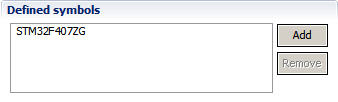
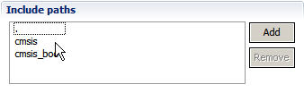
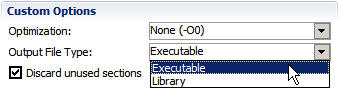
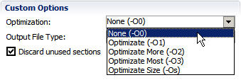
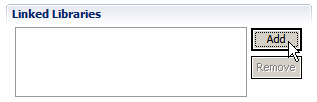
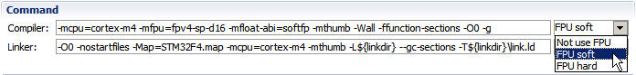
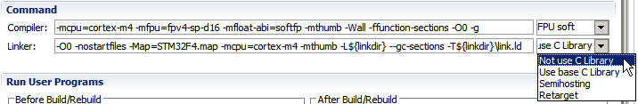

Project Configuration
Quick Navigation for Project Configuration
Opening Project Configuration
After creating a project, CoIDE will automatically generate a build.xml file for the project. It contains the project configuration. By editing the file to configure the project. There is an interface in CoIDE to help us to edit build.xml file.
There are several ways to open the project configuration interface: double-click build.xml in the project view or click Project->Configuration in CoIDE menubar.
Adding Preprocessor Symbols
For CoIDE projects, you can define preprocessor symbols for the parser. This makes the parser understand the contents of the C/C++ source code so that you can more effectively use the search and code completion features.
 |
Add symbols in "Defined symbols" section:
- Click Add to define new symbol
- Click Remove to remove selected element
|
Adding Include Paths
For CoIDE projects, you can add include paths for the parser. This makes the parser find the header included in the C source code so that you can more effectively use the search and code completion features.
 |
Add symbols in "Include paths" section:
- Click Add to add new path
- Click Remove to remove selected element
|
Selecting a Project Type
When you create a new project, you can specify the output file type. This output file type will determine the toolchain and data, and tabs that CoIDE uses. In CooCox CoIDE, you can choose from the following output file types:
- Executable -The target file is a binary file (*.bin) that can be downloaded into the chip and run, it is selected by default.
- Library - The target file is a library file (libxx.a). It is a collection of object files which you can link into another application. CoIDE combines object files (i.e. *.o) into an archive (*.a) that is directly linked into an executable.
 |
Select output file type in "Custom Options" section.
- Select Executable to generate binary file
- Select Library to generate library file
|
Setting Optimization Options
Setting optimization options makes the compiler attempt to improve the performance and/or code size at the expense of compilation time and possibly the ability to debug the program.
- Optimization - Set optimization levels, about more optimization levels, please refer to gcc documentation .
- Discard unused sections - Enable garbage collection of unused input sections. The section containing the entry symbol and all sections containing symbols undefined on the command-line will be kept, as will sections
containing symbols referenced by dynamic objects. Check this option will reduce code size.
 |
Set optimization options in "Custom Options" section.
- Select Optimization to set optimization level
- Check Discard unused sections to discard unused input sections
|
Adding Library
Library is a set of routines, external functions and variables which are resolved in a caller at compile-time and copied into a target application by a compiler, linker, or binder, producing an object file and a stand-alone executable. CoIDE library is a gcc library.
 |
Add libraries file in "Linked Libraries" section.
- Click Add to add new library
- Click Remove to remove selected library
|
Customizing Memory Areas
Customize the start address and size for IROM and IRAM in "Memory Areas" section.
You can select:
- Debug in Flash (Default)
- Debug in RAM
The start address and size for IROM and IRAM will change automatically in accordance with your selection.
You can also set the values by yourself.
- Customize the start address of IROM and IRAM in Start line
- Customize the size of IROM and IRAM in Size line
Customizing Linker Script
Customize the linker script file for current project in "Locate Link File" section.
- Click Locate to locate an existing linker script file.
- Click Edit to edit current linker script file in CoIDE editor.
Customizing Compiler and Linker Options
You can add, delete and modify the Compiler and Linker options.
Customize compiler and linker options in "Command" section.
- Customize compile options in Compiler line
- Customize link options in Linker line
- Select MCU types: Not use FPU, FPU soft and FPU hard (Note: If you select FPU hard, you need to enable FPU in your code)
- Select linked Library: Not use C Library, Use base C Library, Semihosting, Retarget

 |
Customizing Programs to Run Before/After Build/Rebuild
Customize programs to run before/after build/rebuild in "Run User Programs" section.
- Customize programs to run before build/rebuild under the Before Build/Rebuild tag
- Customize programs to run after build/rebuild under the After Build/Rebuild tag
You can input a command directly or import a .bat / .exe file.
After configuration, Build/Rebuild the project.
|
|